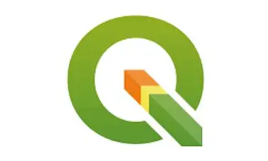
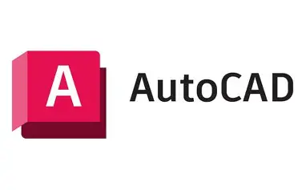
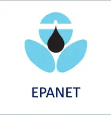

Sarjana Teknik (S.T.)
Strata 1 Teknik Lingkungan dengan pengalaman profesional di bidang pengadaan dan administrasi. Berorientasi pada detail, komunikatif, dan siap berkontribusi di lingkungan kerja yang dinamis.
Saya adalah lulusan Teknik Lingkungan dari Universitas Islam Indonesia angkatan 2024 dengan IPK 3.49. Selama masa studi, saya membangun fondasi kuat di bidang analisis lingkungan, pengelolaan sumber daya, dan standar regulasi lingkungan hidup.
Setelah lulus, saya langsung terjun ke dunia profesional dan memperoleh pengalaman berharga selama satu tahun di PT. Unilab Perdana sebagai Staff Pengadaan. Pengalaman ini menempa kemampuan saya dalam administrasi, koordinasi vendor, serta manajemen data dan dokumen.
Saya menjunjung tinggi komunikasi yang efektif dan profesional kepada klien maupun rekan kerja, serta selalu berupaya memberikan hasil terbaik dalam setiap tugas yang dipercayakan.
Bertanggung jawab atas proses pengadaan barang dan jasa perusahaan secara menyeluruh, mulai dari identifikasi kebutuhan, seleksi vendor, negosiasi, hingga pemantauan pengiriman. Mengelola dan menyusun dokumen administrasi pengadaan dengan teliti menggunakan Microsoft Excel dan sistem pencatatan internal. Berkoordinasi aktif dengan klien dan pihak eksternal untuk memastikan kelancaran proses pengadaan sesuai jadwal dan anggaran yang ditetapkan.


